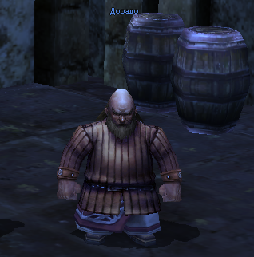

Drudd in Central Plaza (i-10)
Need:
- 33-55 Level
- Bloody pelt - x30
- Drop from [Lv28 Cape Jackals] at Nelstadt Plains, D-9 and E-9
- Drop from [Lv28 Cape Jackals] at Himurart Desert, G-6
- Drop from [Lv32 Morax] in Himurart Desert, around G-10
- Drop from [Lv33 Ratling Sentinel] in Himurart Desert, around H-13
Info:
Reward: